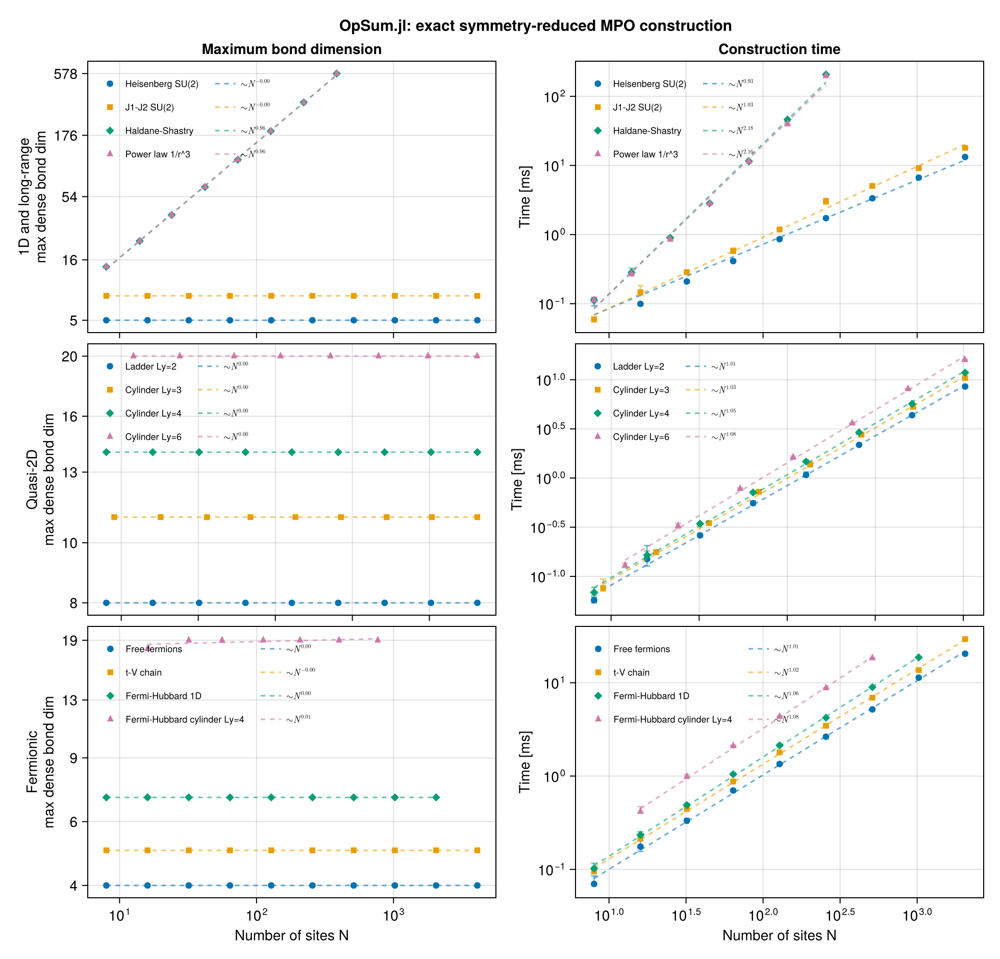
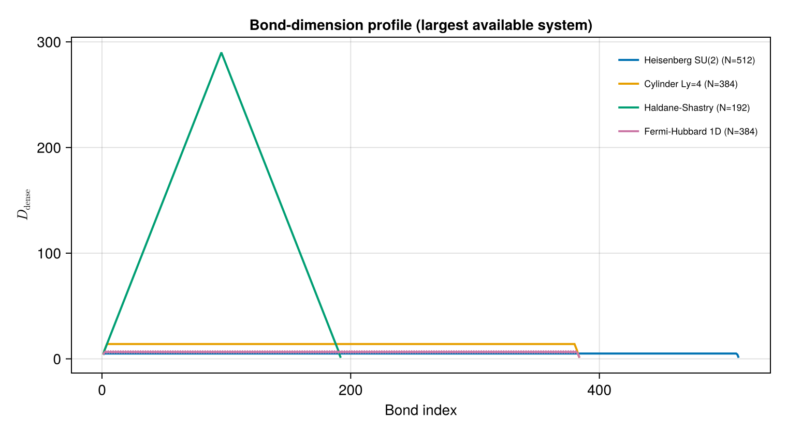

Long-range interactions
Every model on the previous pages had a bond dimension independent of system size, because only a bounded number of couplings could straddle any cut. Long-range models break that: when every pair of sites interacts, the number of open channels at a bond grows with the system.
This page builds the Haldane–Shastry chain and a general power law, and shows that the exact bond dimension grows linearly:
\[D_\mathrm{dense} = \tfrac{3}{2} N + 2 .\]
using OpSum: OpSum
include(joinpath(pkgdir(OpSum), "examples", "common.jl"))Main.hermiticity_errorHaldane–Shastry
\[H = J \frac{\pi^2}{N^2} \sum_{n < m} \frac{\vec{S}_n \cdot \vec{S}_m}{\sin^2\!\left(\pi (n-m)/N\right)}\]
An all-to-all model on $N$ sites has $\binom{N}{2}$ terms, so the accumulation pattern matters a great deal here. Collecting the terms into a Vector and calling sum is $O(M \log M)$; writing reduce(+, generator) instead folds left and rebuilds the term dictionary at every step, which is $O(M^2)$ — at $N = 120$ that is the difference between 0.75 s and 6.9 s.
V = SU2Space(1 // 2 => 1)
S = spin(V)
function haldane_shastry(N; J = 1.0)
pref = J * π^2 / N^2
return sum(
[
(pref / sin(π * (m - n) / N)^2) * dot(S[n], S[m])
for n in 1:(N - 1) for m in (n + 1):N
]
)
end
N = 16
sites = fill(V, N)
H_hs = haldane_shastry(N)
res_hs = build("Haldane-Shastry", H_hs, sites)(Ws = SparseArrays.SparseMatrixCSC{OpSum.SiteOperator{TensorKitSectors.SU2Irrep}, Int64}[sparse([1, 1], [1, 2], OpSum.SiteOperator{TensorKitSectors.SU2Irrep}[SiteOperator{TensorKitSectors.SU2Irrep}(ITO(Irrep[SU₂](1), n=1)), SiteOperator{TensorKitSectors.SU2Irrep}(ITO(Irrep[SU₂](0), n=0))], 1, 2), sparse([1, 1, 2, 2], [1, 2, 3, 4], OpSum.SiteOperator{TensorKitSectors.SU2Irrep}[SiteOperator{TensorKitSectors.SU2Irrep}(ITO(Irrep[SU₂](1), n=1)), SiteOperator{TensorKitSectors.SU2Irrep}(ITO(Irrep[SU₂](0), n=0)), SiteOperator{TensorKitSectors.SU2Irrep}(ITO(Irrep[SU₂](1), n=1)), SiteOperator{TensorKitSectors.SU2Irrep}(ITO(Irrep[SU₂](0), n=0))], 2, 4), sparse([1, 2, 3, 2, 3, 4, 4], [1, 1, 1, 2, 3, 4, 5], OpSum.SiteOperator{TensorKitSectors.SU2Irrep}[SiteOperator{TensorKitSectors.SU2Irrep}(-2.631723238330692 - 0.0im*ITO(Irrep[SU₂](0), n=0)), SiteOperator{TensorKitSectors.SU2Irrep}(-0.683962585457583 - 0.0im*ITO(Irrep[SU₂](1), n=1)), SiteOperator{TensorKitSectors.SU2Irrep}(-2.631723238330692 - 0.0im*ITO(Irrep[SU₂](1), n=1)), SiteOperator{TensorKitSectors.SU2Irrep}(ITO(Irrep[SU₂](0), n=0)), SiteOperator{TensorKitSectors.SU2Irrep}(ITO(Irrep[SU₂](0), n=0)), SiteOperator{TensorKitSectors.SU2Irrep}(ITO(Irrep[SU₂](1), n=1)), SiteOperator{TensorKitSectors.SU2Irrep}(ITO(Irrep[SU₂](0), n=0))], 4, 5), sparse([1, 2, 3, 4, 2, 3, 4, 5, 5], [1, 1, 1, 1, 2, 3, 4, 5, 6], OpSum.SiteOperator{TensorKitSectors.SU2Irrep}[SiteOperator{TensorKitSectors.SU2Irrep}(ITO(Irrep[SU₂](0), n=0)), SiteOperator{TensorKitSectors.SU2Irrep}(-0.3245142179970122 - 0.0im*ITO(Irrep[SU₂](1), n=1)), SiteOperator{TensorKitSectors.SU2Irrep}(-0.683962585457583 - 0.0im*ITO(Irrep[SU₂](1), n=1)), SiteOperator{TensorKitSectors.SU2Irrep}(-2.631723238330692 - 0.0im*ITO(Irrep[SU₂](1), n=1)), SiteOperator{TensorKitSectors.SU2Irrep}(ITO(Irrep[SU₂](0), n=0)), SiteOperator{TensorKitSectors.SU2Irrep}(ITO(Irrep[SU₂](0), n=0)), SiteOperator{TensorKitSectors.SU2Irrep}(ITO(Irrep[SU₂](0), n=0)), SiteOperator{TensorKitSectors.SU2Irrep}(ITO(Irrep[SU₂](1), n=1)), SiteOperator{TensorKitSectors.SU2Irrep}(ITO(Irrep[SU₂](0), n=0))], 5, 6), sparse([1, 2, 3, 4, 5, 2, 3, 4, 5, 6, 6], [1, 1, 1, 1, 1, 2, 3, 4, 5, 6, 7], OpSum.SiteOperator{TensorKitSectors.SU2Irrep}[SiteOperator{TensorKitSectors.SU2Irrep}(ITO(Irrep[SU₂](0), n=0)), SiteOperator{TensorKitSectors.SU2Irrep}(-0.2003280032026426 - 0.0im*ITO(Irrep[SU₂](1), n=1)), SiteOperator{TensorKitSectors.SU2Irrep}(-0.3245142179970122 - 0.0im*ITO(Irrep[SU₂](1), n=1)), SiteOperator{TensorKitSectors.SU2Irrep}(-0.683962585457583 - 0.0im*ITO(Irrep[SU₂](1), n=1)), SiteOperator{TensorKitSectors.SU2Irrep}(-2.631723238330692 - 0.0im*ITO(Irrep[SU₂](1), n=1)), SiteOperator{TensorKitSectors.SU2Irrep}(ITO(Irrep[SU₂](0), n=0)), SiteOperator{TensorKitSectors.SU2Irrep}(ITO(Irrep[SU₂](0), n=0)), SiteOperator{TensorKitSectors.SU2Irrep}(ITO(Irrep[SU₂](0), n=0)), SiteOperator{TensorKitSectors.SU2Irrep}(ITO(Irrep[SU₂](0), n=0)), SiteOperator{TensorKitSectors.SU2Irrep}(ITO(Irrep[SU₂](1), n=1)), SiteOperator{TensorKitSectors.SU2Irrep}(ITO(Irrep[SU₂](0), n=0))], 6, 7), sparse([1, 2, 3, 4, 5, 6, 2, 3, 4, 5, 6, 7, 7], [1, 1, 1, 1, 1, 1, 2, 3, 4, 5, 6, 7, 8], OpSum.SiteOperator{TensorKitSectors.SU2Irrep}[SiteOperator{TensorKitSectors.SU2Irrep}(ITO(Irrep[SU₂](0), n=0)), SiteOperator{TensorKitSectors.SU2Irrep}(-0.14488349141493662 - 0.0im*ITO(Irrep[SU₂](1), n=1)), SiteOperator{TensorKitSectors.SU2Irrep}(-0.2003280032026426 - 0.0im*ITO(Irrep[SU₂](1), n=1)), SiteOperator{TensorKitSectors.SU2Irrep}(-0.3245142179970122 - 0.0im*ITO(Irrep[SU₂](1), n=1)), SiteOperator{TensorKitSectors.SU2Irrep}(-0.683962585457583 - 0.0im*ITO(Irrep[SU₂](1), n=1)), SiteOperator{TensorKitSectors.SU2Irrep}(-2.631723238330692 - 0.0im*ITO(Irrep[SU₂](1), n=1)), SiteOperator{TensorKitSectors.SU2Irrep}(ITO(Irrep[SU₂](0), n=0)), SiteOperator{TensorKitSectors.SU2Irrep}(ITO(Irrep[SU₂](0), n=0)), SiteOperator{TensorKitSectors.SU2Irrep}(ITO(Irrep[SU₂](0), n=0)), SiteOperator{TensorKitSectors.SU2Irrep}(ITO(Irrep[SU₂](0), n=0)), SiteOperator{TensorKitSectors.SU2Irrep}(ITO(Irrep[SU₂](0), n=0)), SiteOperator{TensorKitSectors.SU2Irrep}(ITO(Irrep[SU₂](1), n=1)), SiteOperator{TensorKitSectors.SU2Irrep}(ITO(Irrep[SU₂](0), n=0))], 7, 8), sparse([1, 2, 3, 4, 5, 6, 7, 2, 3, 4, 5, 6, 7, 8, 8], [1, 1, 1, 1, 1, 1, 1, 2, 3, 4, 5, 6, 7, 8, 9], OpSum.SiteOperator{TensorKitSectors.SU2Irrep}[SiteOperator{TensorKitSectors.SU2Irrep}(ITO(Irrep[SU₂](0), n=0)), SiteOperator{TensorKitSectors.SU2Irrep}(-0.1173494273529872 - 0.0im*ITO(Irrep[SU₂](1), n=1)), SiteOperator{TensorKitSectors.SU2Irrep}(-0.14488349141493662 - 0.0im*ITO(Irrep[SU₂](1), n=1)), SiteOperator{TensorKitSectors.SU2Irrep}(-0.2003280032026426 - 0.0im*ITO(Irrep[SU₂](1), n=1)), SiteOperator{TensorKitSectors.SU2Irrep}(-0.3245142179970122 - 0.0im*ITO(Irrep[SU₂](1), n=1)), SiteOperator{TensorKitSectors.SU2Irrep}(-0.683962585457583 - 0.0im*ITO(Irrep[SU₂](1), n=1)), SiteOperator{TensorKitSectors.SU2Irrep}(-2.631723238330692 - 0.0im*ITO(Irrep[SU₂](1), n=1)), SiteOperator{TensorKitSectors.SU2Irrep}(ITO(Irrep[SU₂](0), n=0)), SiteOperator{TensorKitSectors.SU2Irrep}(ITO(Irrep[SU₂](0), n=0)), SiteOperator{TensorKitSectors.SU2Irrep}(ITO(Irrep[SU₂](0), n=0)), SiteOperator{TensorKitSectors.SU2Irrep}(ITO(Irrep[SU₂](0), n=0)), SiteOperator{TensorKitSectors.SU2Irrep}(ITO(Irrep[SU₂](0), n=0)), SiteOperator{TensorKitSectors.SU2Irrep}(ITO(Irrep[SU₂](0), n=0)), SiteOperator{TensorKitSectors.SU2Irrep}(ITO(Irrep[SU₂](1), n=1)), SiteOperator{TensorKitSectors.SU2Irrep}(ITO(Irrep[SU₂](0), n=0))], 8, 9), sparse([1, 2, 3, 4, 5, 6, 7, 8, 2, 3, 4, 5, 6, 7, 8, 9, 9], [1, 1, 1, 1, 1, 1, 1, 1, 2, 3, 4, 5, 6, 7, 8, 9, 10], OpSum.SiteOperator{TensorKitSectors.SU2Irrep}[SiteOperator{TensorKitSectors.SU2Irrep}(ITO(Irrep[SU₂](0), n=0)), SiteOperator{TensorKitSectors.SU2Irrep}(-0.10412710349964041 - 0.0im*ITO(Irrep[SU₂](1), n=1)), SiteOperator{TensorKitSectors.SU2Irrep}(-0.1173494273529872 - 0.0im*ITO(Irrep[SU₂](1), n=1)), SiteOperator{TensorKitSectors.SU2Irrep}(-0.14488349141493662 - 0.0im*ITO(Irrep[SU₂](1), n=1)), SiteOperator{TensorKitSectors.SU2Irrep}(-0.2003280032026426 - 0.0im*ITO(Irrep[SU₂](1), n=1)), SiteOperator{TensorKitSectors.SU2Irrep}(-0.3245142179970122 - 0.0im*ITO(Irrep[SU₂](1), n=1)), SiteOperator{TensorKitSectors.SU2Irrep}(-0.683962585457583 - 0.0im*ITO(Irrep[SU₂](1), n=1)), SiteOperator{TensorKitSectors.SU2Irrep}(-2.631723238330692 - 0.0im*ITO(Irrep[SU₂](1), n=1)), SiteOperator{TensorKitSectors.SU2Irrep}(ITO(Irrep[SU₂](0), n=0)), SiteOperator{TensorKitSectors.SU2Irrep}(ITO(Irrep[SU₂](0), n=0)), SiteOperator{TensorKitSectors.SU2Irrep}(ITO(Irrep[SU₂](0), n=0)), SiteOperator{TensorKitSectors.SU2Irrep}(ITO(Irrep[SU₂](0), n=0)), SiteOperator{TensorKitSectors.SU2Irrep}(ITO(Irrep[SU₂](0), n=0)), SiteOperator{TensorKitSectors.SU2Irrep}(ITO(Irrep[SU₂](0), n=0)), SiteOperator{TensorKitSectors.SU2Irrep}(ITO(Irrep[SU₂](0), n=0)), SiteOperator{TensorKitSectors.SU2Irrep}(ITO(Irrep[SU₂](1), n=1)), SiteOperator{TensorKitSectors.SU2Irrep}(ITO(Irrep[SU₂](0), n=0))], 9, 10), sparse([1, 2, 3, 4, 5, 6, 7, 8, 9, 2 … 2, 3, 4, 5, 6, 7, 8, 9, 10, 10], [1, 1, 1, 1, 1, 1, 1, 1, 1, 2 … 8, 8, 8, 8, 8, 8, 8, 8, 8, 9], OpSum.SiteOperator{TensorKitSectors.SU2Irrep}[SiteOperator{TensorKitSectors.SU2Irrep}(ITO(Irrep[SU₂](0), n=0)), SiteOperator{TensorKitSectors.SU2Irrep}(-0.10016400160132129 - 0.0im*ITO(Irrep[SU₂](1), n=1)), SiteOperator{TensorKitSectors.SU2Irrep}(-0.10412710349964041 - 0.0im*ITO(Irrep[SU₂](1), n=1)), SiteOperator{TensorKitSectors.SU2Irrep}(-0.1173494273529872 - 0.0im*ITO(Irrep[SU₂](1), n=1)), SiteOperator{TensorKitSectors.SU2Irrep}(-0.14488349141493662 - 0.0im*ITO(Irrep[SU₂](1), n=1)), SiteOperator{TensorKitSectors.SU2Irrep}(-0.2003280032026426 - 0.0im*ITO(Irrep[SU₂](1), n=1)), SiteOperator{TensorKitSectors.SU2Irrep}(-0.3245142179970122 - 0.0im*ITO(Irrep[SU₂](1), n=1)), SiteOperator{TensorKitSectors.SU2Irrep}(-0.683962585457583 - 0.0im*ITO(Irrep[SU₂](1), n=1)), SiteOperator{TensorKitSectors.SU2Irrep}(-2.631723238330692 - 0.0im*ITO(Irrep[SU₂](1), n=1)), SiteOperator{TensorKitSectors.SU2Irrep}(-0.10412710349964041 - 0.0im*ITO(Irrep[SU₂](0), n=0)) … SiteOperator{TensorKitSectors.SU2Irrep}(-2.631723238330683 - 0.0im*ITO(Irrep[SU₂](0), n=0)), SiteOperator{TensorKitSectors.SU2Irrep}(-0.6839625854575827 - 0.0im*ITO(Irrep[SU₂](0), n=0)), SiteOperator{TensorKitSectors.SU2Irrep}(-0.3245142179970122 - 0.0im*ITO(Irrep[SU₂](0), n=0)), SiteOperator{TensorKitSectors.SU2Irrep}(-0.20032800320264252 - 0.0im*ITO(Irrep[SU₂](0), n=0)), SiteOperator{TensorKitSectors.SU2Irrep}(-0.14488349141493656 - 0.0im*ITO(Irrep[SU₂](0), n=0)), SiteOperator{TensorKitSectors.SU2Irrep}(-0.1173494273529872 - 0.0im*ITO(Irrep[SU₂](0), n=0)), SiteOperator{TensorKitSectors.SU2Irrep}(-0.10412710349964041 - 0.0im*ITO(Irrep[SU₂](0), n=0)), SiteOperator{TensorKitSectors.SU2Irrep}(-0.10016400160132129 - 0.0im*ITO(Irrep[SU₂](0), n=0)), SiteOperator{TensorKitSectors.SU2Irrep}(-0.10412710349964041 - 0.0im*ITO(Irrep[SU₂](1), n=1)), SiteOperator{TensorKitSectors.SU2Irrep}(ITO(Irrep[SU₂](0), n=0))], 10, 9), sparse([1, 2, 3, 9, 4, 9, 5, 9, 6, 9, 7, 9, 8, 9, 9], [1, 1, 2, 2, 3, 3, 4, 4, 5, 5, 6, 6, 7, 7, 8], OpSum.SiteOperator{TensorKitSectors.SU2Irrep}[SiteOperator{TensorKitSectors.SU2Irrep}(ITO(Irrep[SU₂](0), n=0)), SiteOperator{TensorKitSectors.SU2Irrep}(ITO(Irrep[SU₂](1), n=1)), SiteOperator{TensorKitSectors.SU2Irrep}(ITO(Irrep[SU₂](0), n=0)), SiteOperator{TensorKitSectors.SU2Irrep}(-2.631723238330692 - 0.0im*ITO(Irrep[SU₂](1), n=1)), SiteOperator{TensorKitSectors.SU2Irrep}(ITO(Irrep[SU₂](0), n=0)), SiteOperator{TensorKitSectors.SU2Irrep}(-0.683962585457583 - 0.0im*ITO(Irrep[SU₂](1), n=1)), SiteOperator{TensorKitSectors.SU2Irrep}(ITO(Irrep[SU₂](0), n=0)), SiteOperator{TensorKitSectors.SU2Irrep}(-0.3245142179970122 - 0.0im*ITO(Irrep[SU₂](1), n=1)), SiteOperator{TensorKitSectors.SU2Irrep}(ITO(Irrep[SU₂](0), n=0)), SiteOperator{TensorKitSectors.SU2Irrep}(-0.2003280032026426 - 0.0im*ITO(Irrep[SU₂](1), n=1)), SiteOperator{TensorKitSectors.SU2Irrep}(ITO(Irrep[SU₂](0), n=0)), SiteOperator{TensorKitSectors.SU2Irrep}(-0.14488349141493662 - 0.0im*ITO(Irrep[SU₂](1), n=1)), SiteOperator{TensorKitSectors.SU2Irrep}(ITO(Irrep[SU₂](0), n=0)), SiteOperator{TensorKitSectors.SU2Irrep}(-0.1173494273529872 - 0.0im*ITO(Irrep[SU₂](1), n=1)), SiteOperator{TensorKitSectors.SU2Irrep}(ITO(Irrep[SU₂](0), n=0))], 9, 8), sparse([1, 2, 3, 8, 4, 8, 5, 8, 6, 8, 7, 8, 8], [1, 1, 2, 2, 3, 3, 4, 4, 5, 5, 6, 6, 7], OpSum.SiteOperator{TensorKitSectors.SU2Irrep}[SiteOperator{TensorKitSectors.SU2Irrep}(ITO(Irrep[SU₂](0), n=0)), SiteOperator{TensorKitSectors.SU2Irrep}(ITO(Irrep[SU₂](1), n=1)), SiteOperator{TensorKitSectors.SU2Irrep}(ITO(Irrep[SU₂](0), n=0)), SiteOperator{TensorKitSectors.SU2Irrep}(-2.631723238330692 - 0.0im*ITO(Irrep[SU₂](1), n=1)), SiteOperator{TensorKitSectors.SU2Irrep}(ITO(Irrep[SU₂](0), n=0)), SiteOperator{TensorKitSectors.SU2Irrep}(-0.683962585457583 - 0.0im*ITO(Irrep[SU₂](1), n=1)), SiteOperator{TensorKitSectors.SU2Irrep}(ITO(Irrep[SU₂](0), n=0)), SiteOperator{TensorKitSectors.SU2Irrep}(-0.3245142179970122 - 0.0im*ITO(Irrep[SU₂](1), n=1)), SiteOperator{TensorKitSectors.SU2Irrep}(ITO(Irrep[SU₂](0), n=0)), SiteOperator{TensorKitSectors.SU2Irrep}(-0.2003280032026426 - 0.0im*ITO(Irrep[SU₂](1), n=1)), SiteOperator{TensorKitSectors.SU2Irrep}(ITO(Irrep[SU₂](0), n=0)), SiteOperator{TensorKitSectors.SU2Irrep}(-0.14488349141493662 - 0.0im*ITO(Irrep[SU₂](1), n=1)), SiteOperator{TensorKitSectors.SU2Irrep}(ITO(Irrep[SU₂](0), n=0))], 8, 7), sparse([1, 2, 3, 7, 4, 7, 5, 7, 6, 7, 7], [1, 1, 2, 2, 3, 3, 4, 4, 5, 5, 6], OpSum.SiteOperator{TensorKitSectors.SU2Irrep}[SiteOperator{TensorKitSectors.SU2Irrep}(ITO(Irrep[SU₂](0), n=0)), SiteOperator{TensorKitSectors.SU2Irrep}(ITO(Irrep[SU₂](1), n=1)), SiteOperator{TensorKitSectors.SU2Irrep}(ITO(Irrep[SU₂](0), n=0)), SiteOperator{TensorKitSectors.SU2Irrep}(-2.631723238330692 - 0.0im*ITO(Irrep[SU₂](1), n=1)), SiteOperator{TensorKitSectors.SU2Irrep}(ITO(Irrep[SU₂](0), n=0)), SiteOperator{TensorKitSectors.SU2Irrep}(-0.683962585457583 - 0.0im*ITO(Irrep[SU₂](1), n=1)), SiteOperator{TensorKitSectors.SU2Irrep}(ITO(Irrep[SU₂](0), n=0)), SiteOperator{TensorKitSectors.SU2Irrep}(-0.3245142179970122 - 0.0im*ITO(Irrep[SU₂](1), n=1)), SiteOperator{TensorKitSectors.SU2Irrep}(ITO(Irrep[SU₂](0), n=0)), SiteOperator{TensorKitSectors.SU2Irrep}(-0.2003280032026426 - 0.0im*ITO(Irrep[SU₂](1), n=1)), SiteOperator{TensorKitSectors.SU2Irrep}(ITO(Irrep[SU₂](0), n=0))], 7, 6), sparse([1, 2, 3, 6, 4, 6, 5, 6, 6], [1, 1, 2, 2, 3, 3, 4, 4, 5], OpSum.SiteOperator{TensorKitSectors.SU2Irrep}[SiteOperator{TensorKitSectors.SU2Irrep}(ITO(Irrep[SU₂](0), n=0)), SiteOperator{TensorKitSectors.SU2Irrep}(ITO(Irrep[SU₂](1), n=1)), SiteOperator{TensorKitSectors.SU2Irrep}(ITO(Irrep[SU₂](0), n=0)), SiteOperator{TensorKitSectors.SU2Irrep}(-2.631723238330692 - 0.0im*ITO(Irrep[SU₂](1), n=1)), SiteOperator{TensorKitSectors.SU2Irrep}(ITO(Irrep[SU₂](0), n=0)), SiteOperator{TensorKitSectors.SU2Irrep}(-0.683962585457583 - 0.0im*ITO(Irrep[SU₂](1), n=1)), SiteOperator{TensorKitSectors.SU2Irrep}(ITO(Irrep[SU₂](0), n=0)), SiteOperator{TensorKitSectors.SU2Irrep}(-0.3245142179970122 - 0.0im*ITO(Irrep[SU₂](1), n=1)), SiteOperator{TensorKitSectors.SU2Irrep}(ITO(Irrep[SU₂](0), n=0))], 6, 5), sparse([1, 2, 3, 5, 4, 5, 5], [1, 1, 2, 2, 3, 3, 4], OpSum.SiteOperator{TensorKitSectors.SU2Irrep}[SiteOperator{TensorKitSectors.SU2Irrep}(ITO(Irrep[SU₂](0), n=0)), SiteOperator{TensorKitSectors.SU2Irrep}(ITO(Irrep[SU₂](1), n=1)), SiteOperator{TensorKitSectors.SU2Irrep}(ITO(Irrep[SU₂](0), n=0)), SiteOperator{TensorKitSectors.SU2Irrep}(-2.631723238330692 - 0.0im*ITO(Irrep[SU₂](1), n=1)), SiteOperator{TensorKitSectors.SU2Irrep}(ITO(Irrep[SU₂](0), n=0)), SiteOperator{TensorKitSectors.SU2Irrep}(-0.683962585457583 - 0.0im*ITO(Irrep[SU₂](1), n=1)), SiteOperator{TensorKitSectors.SU2Irrep}(ITO(Irrep[SU₂](0), n=0))], 5, 4), sparse([1, 2, 3, 4], [1, 1, 2, 2], OpSum.SiteOperator{TensorKitSectors.SU2Irrep}[SiteOperator{TensorKitSectors.SU2Irrep}(ITO(Irrep[SU₂](0), n=0)), SiteOperator{TensorKitSectors.SU2Irrep}(ITO(Irrep[SU₂](1), n=1)), SiteOperator{TensorKitSectors.SU2Irrep}(ITO(Irrep[SU₂](0), n=0)), SiteOperator{TensorKitSectors.SU2Irrep}(-2.631723238330692 - 0.0im*ITO(Irrep[SU₂](1), n=1))], 4, 2), sparse([1, 2], [1, 1], OpSum.SiteOperator{TensorKitSectors.SU2Irrep}[SiteOperator{TensorKitSectors.SU2Irrep}(ITO(Irrep[SU₂](0), n=0)), SiteOperator{TensorKitSectors.SU2Irrep}(ITO(Irrep[SU₂](1), n=1))], 2, 1)], secs = Vector{TensorKitSectors.SU2Irrep}[[1, 0], [0, 1, 1, 0], [0, 1, 1, 1, 0], [0, 1, 1, 1, 1, 0], [0, 1, 1, 1, 1, 1, 0], [0, 1, 1, 1, 1, 1, 1, 0], [0, 1, 1, 1, 1, 1, 1, 1, 0], [0, 1, 1, 1, 1, 1, 1, 1, 1, 0], [0, 1, 1, 1, 1, 1, 1, 1, 0], [0, 1, 1, 1, 1, 1, 1, 0], [0, 1, 1, 1, 1, 1, 0], [0, 1, 1, 1, 1, 0], [0, 1, 1, 1, 0], [0, 1, 1, 0], [0, 1], [0]], D = 10, Ddense = 26, time = 0.000333022)Even with every pair coupled, the compression is still exact:
islossless(H_hs, sites)trueLinear growth
The coefficient matrix of a generic long-range model has full rank, so at a cut after site $b$ the minimum vertex cover has to keep one open spin-1 channel for roughly every site on the smaller side — giving $\min(b, N-b)$ multiplets, maximised at the middle of the chain.
for L in (10, 20, 40, 60, 80)
r = build("HS N=$L", haldane_shastry(L), fill(V, L); quiet = true)
println(
" N=$(rpad(L, 3)) nterms=$(rpad(L * (L - 1) ÷ 2, 5)) D=$(rpad(r.D, 4))",
" D_dense=$(rpad(r.Ddense, 5)) 3N/2+2 = $(3L ÷ 2 + 2)"
)
end N=10 nterms=45 D=7 D_dense=17 3N/2+2 = 17
N=20 nterms=190 D=12 D_dense=32 3N/2+2 = 32
N=40 nterms=780 D=22 D_dense=62 3N/2+2 = 62
N=60 nterms=1770 D=32 D_dense=92 3N/2+2 = 92
N=80 nterms=3160 D=42 D_dense=122 3N/2+2 = 122Contrast that with the finite-range models: this is the one family whose MPO genuinely grows with the system, and it is why long-range Hamiltonians are the interesting stress test for MPO construction.
all(
build("hs", haldane_shastry(L), fill(V, L); quiet = true).Ddense == 3L ÷ 2 + 2
for L in (10, 20, 30, 40)
)trueA general power law
\[H = J \sum_{n<m} \frac{\vec{S}_n \cdot \vec{S}_m}{|n-m|^{\alpha}}\]
The exponent controls how fast the couplings decay, but not the exact bond dimension: any coefficient matrix of full rank gives the same linear law. Truncation is what exploits the decay.
function powerlaw(N; α = 3.0, J = 1.0)
return sum(
[
(J * abs(m - n)^(-α)) * dot(S[n], S[m])
for n in 1:(N - 1) for m in (n + 1):N
]
)
end
for α in (1.0, 2.0, 3.0, 6.0)
r = build("powerlaw α=$α", powerlaw(24; α), fill(V, 24); quiet = true)
println(" α=$(rpad(α, 4)) D=$(rpad(r.D, 4)) D_dense=$(r.Ddense)")
end α=1.0 D=14 D_dense=38
α=2.0 D=14 D_dense=38
α=3.0 D=14 D_dense=38
α=6.0 D=14 D_dense=38Trading exactness for size
BipartiteAlgorithm (the default) is exact. SVDBondAlgorithm instead compresses each bond by a truncated SVD across all charge sectors at once, so a fast-decaying power law can be squeezed hard for a controlled error.
Note that faithfulness via mpo_terms is meaningless once the compression is lossy — it assumes an intact identity backbone. The honest check is the operator error against the dense oracle, so we measure that at a size where the oracle is affordable.
using MatrixAlgebraKit: truncrank
let sites_c = fill(V, 6), H = powerlaw(6; α = 3.0)
oracle = instantiate(H, sites_c)
exact = build("powerlaw exact", H, sites_c; quiet = true)
println(" exact: D_dense=$(exact.Ddense) rel. error 0")
for k in (8, 6, 4, 2, 1)
Ws, secs = irrep_mpo(H, sites_c, SVDBondAlgorithm(truncrank(k)))
O = mpo_tensormap(irrep_mpo_tensors(Ws, secs, sites_c))
err = norm(O - oracle) / norm(oracle)
D = maximum(b -> sum(dim(c) for c in secs[b]), eachindex(secs))
println(" truncrank($(rpad(k, 2))) D_dense=$(rpad(D, 4)) rel. error $(round(err; sigdigits = 3))")
end
end exact: D_dense=11 rel. error 0
truncrank(8 ) D_dense=8 rel. error 0.000342
truncrank(6 ) D_dense=5 rel. error 0.0185
truncrank(4 ) D_dense=4 rel. error 0.774
truncrank(2 ) D_dense=2 rel. error 1.0
truncrank(1 ) D_dense=1 rel. error 1.0Scaling
julia --project=benchmark scripts/plot_benchmarks.jl --run --sweep fullThe linear bond dimension has a price in construction time. Every in-flight coupling is one edge of the bipartite graph at every bond it straddles, so the exact sweep costs $\sum_\mathrm{terms} \mathrm{span}$: linear in $N$ for a finite-range model, but $O(N^3)$ when all $\binom{N}{2}$ pairs interact. That is intrinsic rather than an implementation artefact — at a cut after site $b$ the coefficient matrix $J(n,m)$ restricted to $n \le b < m$ is genuinely dense, so the edges have to be there. Truncation, above, is the lever for large long-range systems.

The profile of the bond dimension along the chain makes the contrast with the local models vivid: long-range couplings peak at the middle of the chain, where the cut separates the largest number of interacting pairs — $\min(b, N-b)$ open channels, a triangle in $b$ — while finite-range and quasi-2D models sit on a flat plateau. (The figure is log-scaled in $D_\mathrm{dense}$ so the plateaus, two orders of magnitude below the peak, stay legible.)

This page was generated using Literate.jl.